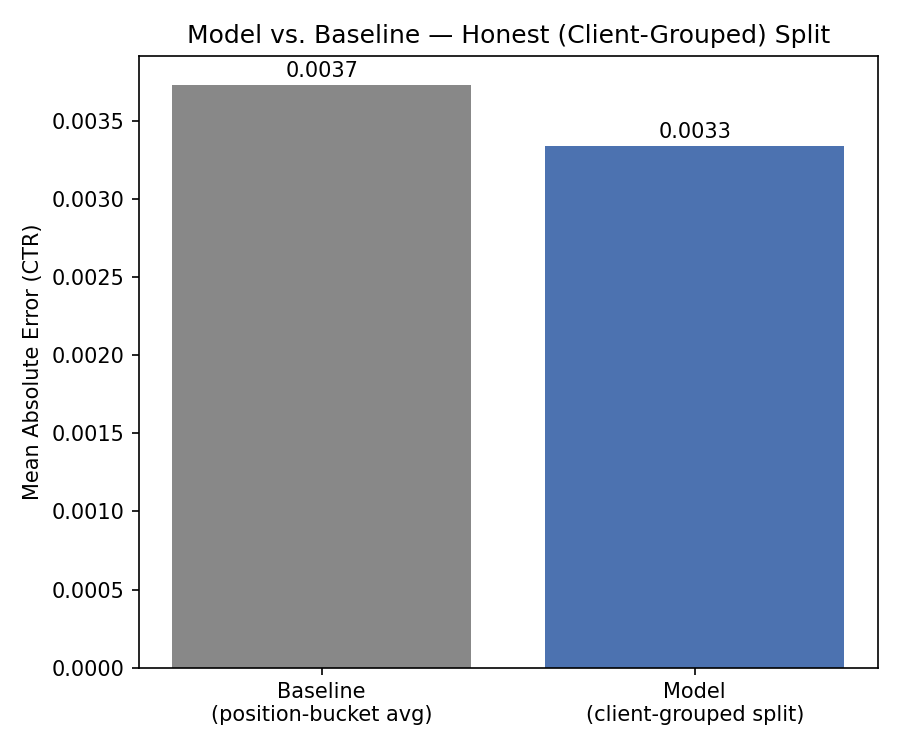
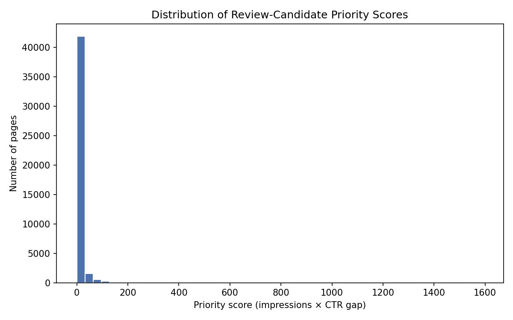

CTR Opportunity Scoring in Search Content — a validated method for ranking which high-visibility pages are quietly under-converting, and why the honest answer is smaller than the exciting one.
This study asks whether pages that rank well in Google Search but still under-perform on click-through rate can be identified and prioritized using observed data rather than a single hand-written rule. Using one month of FlyRank warehouse search and engagement data, we built a position-bucket CTR baseline, then trained a Random Forest regressor on a client-grouped validation split to avoid client-specific memorization. After catching and removing a leaked feature — a session count nearly identical to the click target — the honest model reduced prediction error by roughly 10.5% over the baseline, on clients it had never seen during training. The resulting ranked queue, driven mainly by search impressions, page engagement, and ranking position, flags pages where observed CTR falls meaningfully below what similar, similarly-ranked pages typically achieve. This is offered as decision-support for content review prioritization, not as a causal claim about what drives clicks, or a guarantee that any specific change will improve performance.
Every content team eventually runs into the same wall: there are more pages than there is time to review them. A page can rank well in Google — sitting comfortably in the top 10 — and still quietly underperform, earning far fewer clicks than its position would normally predict. Left unnoticed, this is wasted visibility: the page has already earned its spot in search results, but something — a weak title, an unclear meta description, a mismatched snippet — is stopping people from clicking through.
The decision this work supports is simple to state and hard to do manually: out of thousands of pages, which ones should a content reviewer look at first? The person acting on this is a content strategist or SEO lead with limited review time. Getting the call wrong has two different costs — flagging a healthy page wastes a reviewer's limited attention, while missing a genuinely underperforming page means it keeps losing potential clicks, unnoticed. Neither is catastrophic on its own, since a human always reviews before anything is changed, but at scale, an untargeted review process burns time the team doesn't have.
This paper builds — and honestly validates — a way to rank pages by how much their click-through rate underperforms what similarly-positioned pages typically achieve. It turns "check everything" into "check this shortlist first."
This study uses the FlyRank ML Internship warehouse dataset, specifically fact_content_daily_performance — a table of daily search and engagement metrics, aggregated to one row per content page for a single reporting month. Each row combines Google Search Console signals (impressions, clicks, average position) with GA4 engagement signals (pageviews, sessions, engaged sessions, total engagement time) and traffic-source breakdowns (organic, direct, referral, social, paid, AI-referral sessions).
| Scope | Value |
|---|---|
| Grain | 1 page, aggregated over 1 month, per client |
| Filter applied | ≥ 100 search impressions |
| Clients | 46 total — 10 held out for testing |
| Rows analyzed | 101,917 eligible pages |
What was excluded, and why:
Baseline. A simple, explainable rule — for each page, compute the average CTR of all other pages that rank in the same position bucket (Top 3, Positions 4–10, 11–20, 21+), and use that bucket average as the predicted CTR for every page in the bucket.
Model. A Random Forest Regressor, trained to predict a page's actual CTR from search impressions, average position, GA4 pageviews, sessions, engaged sessions, total engagement time, and traffic-source session counts. Random Forest was chosen because it can weigh several signals jointly and capture non-linear relationships, while still being interpretable through permutation feature importance — unlike a black-box model, it's possible to check what it's actually leaning on.
Validation split. Client IDs were used strictly for grouping, never as model features. The dataset was split using a client-grouped split, meaning entire clients — not just individual pages — were held out for testing. A random row-level split would let the model see other pages from the same client in both training and testing, letting it partly memorize client-specific quirks rather than learn a pattern that generalizes to a brand-new client. Grouped-by-client is the realistic scenario, since the model needs to work for clients it has never seen before.
Leakage check. During development, one feature — a traffic-source session count — was found to correlate at 0.988 with the click count used to calculate the target CTR. Including it inflated the apparent improvement to ~24%. It was removed, and a controlled test confirmed the detection method worked: deliberately re-adding the leaky feature measurably improved the score again, proving the leakage check could actually catch this kind of problem rather than just assuming it away. All results below use the clean, leakage-free feature set.
Metric. Mean Absolute Error (MAE) between predicted CTR and actual CTR, directly comparable between the baseline and the model on the same held-out test rows.
On the client-grouped test split — 32,285 pages across 10 clients never seen during training:
| Method | MAE | In plain words |
|---|---|---|
| Baseline (position-bucket average) | 0.003729 | Off by ~0.37 percentage points, on average |
| Random Forest (leakage-free) | 0.003337 | Off by ~0.33 percentage points, on average |
The first version of this model appeared to beat the baseline by ~24% — until a feature correlated 0.988 with the click target was traced and removed. The honest, leakage-free number is smaller. A supporting check also showed a naive random split (instead of grouped-by-client) overstated performance by roughly 15% relative to the honest split — evidence of how much apparent model "skill" was really client-level memorization. The smaller number is the one reported here, deliberately.


What the model leans on (via permutation importance): search impressions mattered most, followed by GA4 pageviews, then average search position. Several traffic-source features — direct, referral, AI sessions — contributed negligible or even slightly negative signal, meaning they added noise rather than helping.
Where the model struggles most: pages missing GA4 engagement data entirely (roughly 15% of the test set) produced the largest prediction errors, since the model has little to work with beyond position and impressions for these pages.
What patterns were observed in this dataset, which pages show CTR meaningfully below what similarly-positioned pages typically achieve, and directional evidence for where reviewer attention is statistically most likely to matter.
That any specific title or content change will cause a CTR improvement, that this reflects an actual Google ranking factor, or that a page not flagged is definitely fine.
Pages are flagged ctr_review_candidate when three conditions are met: the page ranks in the top 20 (visible in search), its observed CTR falls below the expected average for its position bucket, and it has at least 100 impressions — enough traffic for the comparison to be statistically meaningful.
Priority within the queue combines two things: how far a page's CTR falls below expectation, and how much existing traffic it already has — since improving a high-traffic page has more potential upside than improving a low-traffic one with the same percentage gap.
Recommended action for top-priority pages: review title and meta description first. For pages with CTR near 0% despite meaningful traffic, also check for technical issues — a broken search snippet or an incorrect canonical tag — before assuming it's purely a content problem.
What should never be automated: no auto-publishing of title or meta changes, no auto-deletion or merging of pages, and no treating the ranked score as a guaranteed outcome for any individual page. Every flagged page needs a human read before any change goes live.
All notebooks behind this paper are available in the project repository under work/notebooks/, covering the full pipeline from initial research question framing through data contract validation, baseline scoring, model training, leakage auditing, and the final action playbook. Exported artifacts — the ranked action queue, model performance metrics, and figures — are available under work/outputs/ and work/figures/.
github.com/MaryamNaveed-bioinfo/Flyranks-internship-assignmnet-1 ↗